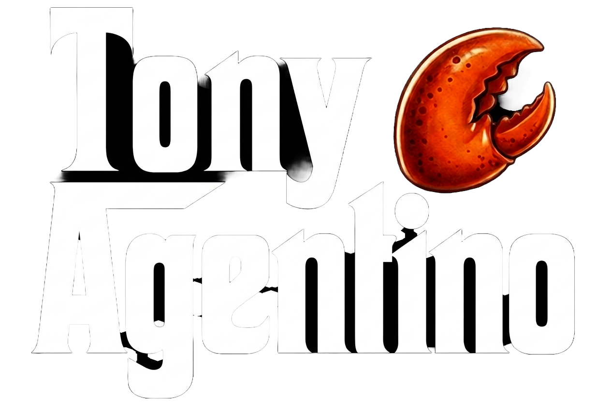

"The mess is always there. You just move it around."
A guilt-ridden Italian-American mobster runs a waste management empire in New Jersey, struggles with a therapist who can't know his real job, and disposes of his problems — one lobster tank at a time.
Tony Agentino is not a bad man. He is a man who does bad things — and knows the difference, which is the part that keeps him up at night. He inherited a business. He honors a code. And he has a basement full of very angry, very clawless lobsters that he treats as his last resort.
He pulls everyone out before the end. That's his line. He's never crossed it. Not yet.
"You shoot a man, it's over in a second. He suffers nothing. This — this makes them think."
— Tony Agentino, Episode 1
Every person in Tony's world is a version of the question he can't answer: is this who I actually am?
42. Beautiful suits. Terrible at lying to himself. Cries at wedding commercials. Runs Agentino Sanitation Solutions — which is, obviously, a mob front. Refuses to use guns on principle. The lobster tank is his mercy.
Brilliant, increasingly uneasy. Believes Tony works in "corporate logistics." Notices his metaphors are too specific, his pauses too considered. Doesn't know what she doesn't know — yet.
Loyal to Tony. Deeply, catastrophically stupid. Manages the lobster tank. Names all the lobsters. Gets attached. Has opinions about which ones "seem tired" and shouldn't be used this week.
70s. Tiny. Terrifying. She knows everything about the business and has never once acknowledged it directly. Her dinners are mandatory. Her silences are policy.
Tony's protégé. Too smart. Too moral. A mirror Tony can't stop looking at. His eventual choice will force Tony to confront whether the life can be done with clean hands — or at all.
It hums. It glows. It lives beneath Tony's restaurant. The lobsters have been here longer than most of Tony's men. It is the one place Tony is always, always honest.
A city councilman has been skimming money from a contract and pinning it on Agentino Sanitation. Tony wants to send a message. Sal has just introduced three new lobsters to the tank — one named Frank — and is personally offended that Tony wants to use them so soon after the adjustment period.
Meanwhile, in therapy, Dr. Russo asks Tony why he always talks about cleaning things up.
Tony thinks for a long time. Then says: "Because the mess is always there. You just move it around."
The councilman goes over the tank. Screams. Is pulled out. Goes home. Never speaks of it. Tony drives home, watches infomercials at 2am, and cannot sleep.
Across eight episodes, a federal investigator starts circling Agentino Sanitation. Marco makes a choice that forces Tony to see himself clearly. And Dr. Russo figures something out — not about the mob, but about Tony specifically.
That he is a good man trapped inside a life that requires him to be a bad one. And that he's been in the tank longer than anyone he's ever thrown in it.
The season finale: Tony stands over the tank. Alone. Sal's gone home. The lobsters are calm. No one's in there. No one's coming. He just watches them. For a long time. The camera doesn't cut away.
3–5 minute shorts. Tony describes what happened this week — in the most beautiful, indirect language possible. Dr. Russo responds. The audience sees the actual events in cutaways.
Funny. Dark. Occasionally devastating.
Pilot Short Title: "I Had to Move Some Things This Week"
The format is perfect for YouTube: self-contained, character-driven, with a hook in every cold open. It builds an audience before a full series ever gets made. Tony can be introduced slowly — one therapy session at a time.
"I named him Frank. You can't put Frank in the tank, Tony. He just got here."
— Sal, every time